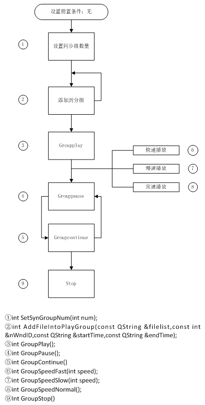

编辑人：杨美化
编辑日期：2014.01.13
插件简介：
//插件名称：RecordPlayer插件
//插件功能：实现本地录像检索和同步回放
接口说明：
//简述：检索设备是否有录像文件存在，如果有通过回调返回录像的日期。
//输入参数:
// sdevname: 设备名称
//返回值:
// 0: 调用成功
// 1: 调用失败
int searchDateByDeviceName(const QString & sdevname);
//简述：检索设备是否有录像文件存在,如果有返回录像文件的信息。
//输入参数:
// sdevname: 设备名称
// sdate： 录像日期，格式为“yyyy-MM-dd”。
// sbegintime： 开始时间，格式为“hh:mm:ss”。
// sendtime： 结束时间，格式为“hh:mm:ss”。
// schannellist：通道号，从1开始，格式为“1;2;3;4;”。
//返回值：
// 1：调用失败
// 0：调用成功
int RecordPlayer::searchVideoFile(const QString& sdevname,const QString& sdate,const QString& sbegintime,const QString& sendtime,const QString& schannellist);
//简述：检索设备是否有录像文件存在,如果有返回录像文件的信息。
//输入参数:
// sDevName: 设备名称
// sDate： 录像日期，格式为“yyyy-MM-dd”。
// nTypes：为检索的类型组合 (按位计算，第0位表示定时录像，第1位表示手动录像，第2位表示报警录像，第3位表示移动侦测录像，例如"15"，表示检索所有类型的组合)。
//返回值：
// 1：调用失败
// 0：调用成功
int RecordPlayer::searchVideoFileEx( const QString &sDevName, const QString& sDate, const int& nTypes );
//搜索符合条件的视频文件。检索结果以事件的形式抛出。
//输入参数nWndId：为窗口ID
//输入参数sDate：为要搜索的日期 (格式"yyyy-MM-dd")
//输入参数sStartTime：为开始检索时间（格式"hh:mm:ss")
//输入参数sEndTime：为结束检索时间（格式"hh:mm:ss")
//输入参数nTypes：为检索的类型组合 (按位计算，第0位表示定时录像，第1位表示手动录像，第2位表示报警录像，第3位表示移动侦测录像，例如"15"，表示检索所有类型的组合)
//返回值:
//1:调用失败
//0:调用成功
int searchVideoFileEx2(const int & nWndId,const QString & sDate,const QString & sStartTime,const QString & sEndTime,const int & nTypes);
//添加播放文件到同步组中，并指定文件播放的窗口ID。
//输入参数nWndId：为窗口ID
//输入参数sDate：为要搜索的日期
//输入参数sStartTime：为开始检索时间
//输入参数sEndTime：为结束检索时间
//输入参数nTypes：为检索的类型组合 (按位计算，第0位表示定时录像，第1位表示手动录像，第2位表示报警录像，第3位表示移动侦测录像，例如"15"，表示检索所有类型的组合)
//返回值：
//1：调用成功
//2：调用失败
int AddFileIntoPlayGroupEx(const int & nWndId,const QString& sDate,const QString & sStartTime,const QString & sEndTime,const int & nTypes);
//添加播放文件到同步组中，并指定文件播放的窗口ID
//输入参数：
//filelist:文件名列表，列表中的文件必须是同一个通道号下的文件，包括完整的文章路径，且按时间先后排序如：D:/JAREC/2014-01-10/99467979/CHL02/190545.avi,D:/JAREC/2014-01-10/99467979/CHL02/201525.avi,D:/JAREC/2014-01-10/99467979/CHL02/204137.avi
//wnd:播放窗口的id
//start:开始播放时间(时间格式："yyyy-MM-dd hh:mm:ss")
//end：结束播放时间(时间格式："yyyy-MM-dd hh:mm:ss")
//返回值：
//0：添加成功
//1：添加失败，通道组已经满
//2：添加失败，窗口已经被占用
//3：添加失败，（失败原因未定义）
int AddFileIntoPlayGroup(const QString &filelist,const int &nWndID,const QString &startTime,const QString &endTime);
//设置同步组数量，默认为4
//输入参数：
//num:设置同步组的数量值
//返回值：
//0：设置成功
//1：设置失败
int SetSynGroupNum(int num);
//组播放
//返回值：
//0：调用成功
//1：调用失败
int GroupPlay();
//暂停播放
//返回值：
//0：调用成功
//1：调用失败
int GroupPause();
//继续播放
//返回值：
//0：调用成功
//调用失败
int GroupContinue();
//停止播放
//返回值：
//0：调用成功
//1：调用失败
int GroupStop();
//快进
//输入参数：
//speed：正常播放速度的倍数（可选值：2，4，8）
//返回值：
//0：调用成功
//1：调用失败
int GroupSpeedFast(int speed);
//慢放
//输入参数：
//speed：正常播放速度的1/N倍（可选值：2，4，8）
//返回值：
//0：调用成功
//1：调用失败
int GroupSpeedSlow(int speed);
//恢复正常的播放速度
//返回值：
//0：调用成功
//1：调用失败
int GroupSpeedNormal();
//简介：设置音量大小
//输入参数：
//uiPersent: 音量大小，范围从0到100，0为静音，默认为最大音量
//返回值：
// 1: 音量设置失败
// 0： 音量设置成功
int SetVolume (const unsigned int &uiPersent);
接口简介：声音开关
输入参数：
bEnabled：声音开关，true打开声音，false关闭声音
返回值：
0：调用成功
1：调用失败
int AudioEnabled (bool bEnabled);
//简介：获取当前的状态
//返回值：
STATUS_NORMAL_PLAY, 0
STATUS_FAST_PLAY, 1
STATUS_SLOW_PLAY, 2
STATUS_PAUSE, 3
STATUS_STOP, 4
int GetCurrentState();
=========截屏=========
void screenShot();
插件抛出的事件：
@1
事件名称：GetRecordDate
事件参数:
devname ：设备名(QString)
date：日期(QString)，格式为“yyyy-MM-dd”
@2
事件名称：GetRecordFile
事件参数:
filename： 文件名(QString)
filepath： 文件路径(QString)
filesize： 文件大小（MB）(QString)
channelnum：通道号(QString)
startTime: 开始时间(QString)， 格式为“yyyy-MM-dd hh:mm:ss”
stopTime: 结束时间(QString)， 格式为“yyyy-MM-dd hh:mm:ss”
@3
事件名称：SearchStop
事件参数:
stopevent ：对应事件检索结束(QString) （可用参数 GetRecordDate 、GetRecordFile)
@4
事件名称：GetRecordFileEx
事件参数:
wndId： 窗口ID(QString)
type： 录像类型(QString)
start: 开始时间(QString)， 格式为“hh:mm:ss”
end: 结束时间(QString)， 格式为“hh:mm:ss”
@5
事件名称：SearchRecordOver
事件参数:
searchResult: 检索结果(QString)， 格式为“SUCCESS”，“INCOMPLETE”
@6
事件名称：ThrowException
事件参数:
filepath： 文件路径(QString)
expCode： 异常号(int)，0表示正常，1表示文件异常或损坏
wndId： 窗口号(int)，取值从0～3，表示该窗口出现异常
抛出事件：
@7
抛出条件：调用screenShot()截图成功;
事件名称：screenShotInfo;
事件参数：
fileName：文件名 :user-chl-type-time(yy-mm-dd-hh-mm-ss-mil)
fileDir:文件路径（盘符+screenShotEx）
chl：窗口号（1-49）
user：操作的用户
type:类型（0：预览，1：本地回放，2：远程回放）
//@1 同步回放
